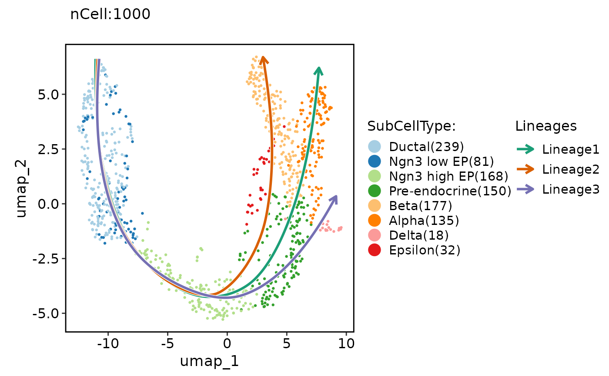
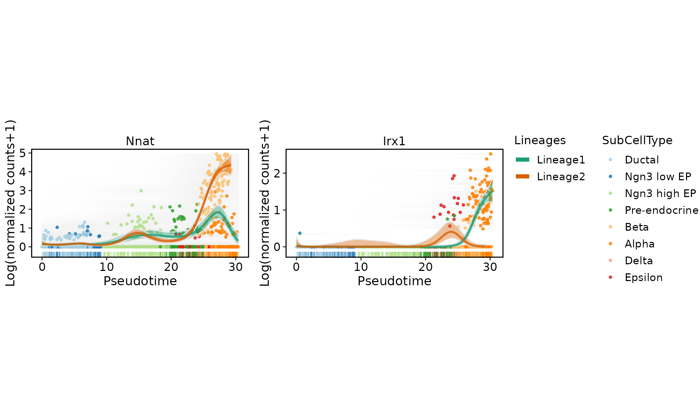

DynamicPlot.RdPlot for dynamic features along lineages.
DynamicPlot(
srt,
features,
lineages,
slot = "counts",
assay = "RNA",
family = NULL,
libsize = NULL,
exp_method = c("log1p", "zscore", "log2fc", "raw"),
lib_normalize = TRUE,
lib_size = NULL,
order.by = "pseudotime",
group.by = NULL,
compare_lineages = TRUE,
compare_features = FALSE,
add_line = TRUE,
add_interval = TRUE,
line.size = 1,
line_palette = "Dark2",
line_pal_color = NULL,
add_point = TRUE,
pt.size = 1,
point_palette = "Paired",
point_pal_color = NULL,
add_rug = TRUE,
add_density = TRUE,
aspect.ratio = 0.5,
legend.position = "right",
legend.direction = "vertical",
combine = TRUE,
nrow = NULL,
ncol = NULL,
byrow = TRUE,
align = "hv",
axis = "lr"
)data("pancreas1k")
pancreas1k <- RunSlingshot(pancreas1k, group.by = "SubCellType", reduction = "UMAP")
#> Warning: Removed 8 row(s) containing missing values (geom_path).
#> Warning: Removed 8 row(s) containing missing values (geom_path).

DynamicPlot(
srt = pancreas1k,
lineages = c("Lineage1", "Lineage2"),
features = c("Nnat", "Irx1"),
group.by = "SubCellType",
compare_lineages = TRUE,
compare_features = FALSE
)
#> [2022-06-21 06:59:00] Start RunDynamicFeatures
#> Number of candidate features(union): 2
#> Calculate dynamic features for Lineage1...
#>
|
| | 0%
|
|======================================================================| 100%
#>
#> [2022-06-21 06:59:02] RunDynamicFeatures done
#> Elapsed time: 1.62 secs
#> [2022-06-21 06:59:02] Start RunDynamicFeatures
#> Number of candidate features(union): 2
#> Calculate dynamic features for Lineage2...
#>
|
| | 0%
|
|======================================================================| 100%
#>
#> [2022-06-21 06:59:03] RunDynamicFeatures done
#> Elapsed time: 1.44 secs
